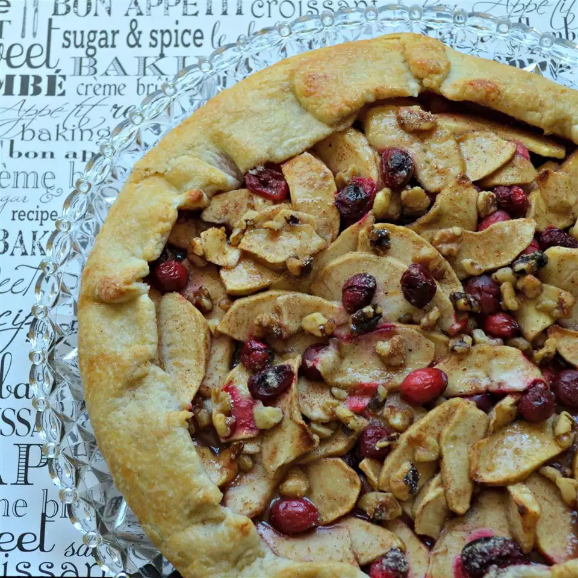

Rustic Fall Fruit Tart

This rustic fall fruit tart is the perfect combination of apples, cranberries, walnuts, and some sensational spices. Not only is this dish baked in a cream cheese pastry, but each bite is bursting with fruity flavor.
Ingredients
- 2 cups all-purpose flour.
- ½ cup butter, chilled.
- ½ cup cream cheese.
- 1 tablespoon water, or as needed.
- 4 apples - peeled, cored, and thinly sliced.
- ⅔ cup fresh cranberries.
- ¼ cup brown sugar, or more to taste.
- ¼ cup white sugar, or more to taste.
- 2 tablespoons all-purpose flour.
- ¾ teaspoon ground cinnamon.
- ⅛ teaspoon ground nutmeg.
- ⅓ cup roughly chopped walnuts, or more to taste.
- 1 egg, beaten.
- 1 tablespoon raw sugar.
Steps
- Place 2 cups flour in a bowl. Cut butter and cream cheese into flour using a knife or pastry blender until mixture resembles coarse crumbs. Gently mix water into flour mixture until dough forms into a ball.
- Mix apples and cranberries with brown sugar, white sugar, 2 tablespoons flour, cinnamon, and nutmeg in a bowl until coated.
- Preheat oven to 375 degrees F (190 degrees C). Lightly grease a baking sheet.
- Roll dough onto a lightly floured work surface, forming about an 11-inch circle. Transfer dough to the prepared baking sheet. Arrange apple-cranberry mixture decoratively on the dough, leaving a 2-inch rim of exposed dough. Sprinkle walnuts over apple-cranberry mixture. Fold exposed crust up and over the edge of the fruit.
- Brush egg over the crust and around the edge of the tart; sprinkle with raw sugar.
- Bake in the preheated oven until crust is browned and filling is tender, 30 to 35 minutes.